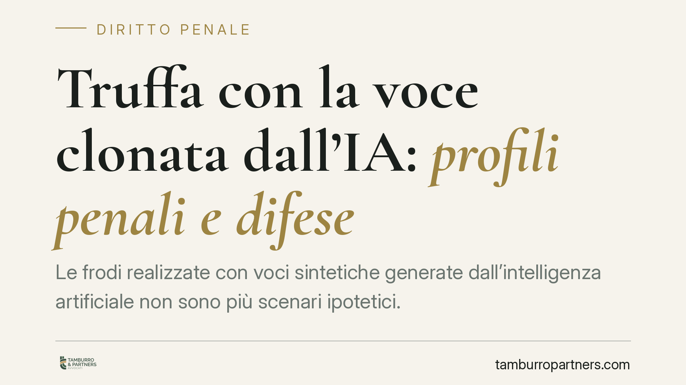

Truffa con la voce clonata dall'IA: profili penali e difese
Le frodi realizzate con voci sintetiche generate dall'intelligenza artificiale non sono più scenari ipotetici. Un criminale clona la voce di un dirigente e ordina un bonifico urgente: la vittima crede di parlare con una persona reale. Analizziamo quali reati si configurano e, soprattutto, come ridurre il rischio e reagire quando il danno è già avvenuto.

Il fenomeno
La clonazione vocale consiste nel generare, tramite software di intelligenza artificiale, una voce artificiale indistinguibile da quella di una persona reale. Bastano pochi secondi di audio autentico — reperibili da interviste, videomessaggi o registrazioni telefoniche — per ricostruire timbro, cadenza e inflessioni.
Lo schema fraudolento è ricorrente: il truffatore contatta un dipendente dell'area amministrativa o finanziaria fingendosi un dirigente o un cliente, e con la voce clonata impartisce un ordine di pagamento presentato come urgente e riservato. La pressione temporale e l'autorevolezza apparente della richiesta spingono la vittima a disporre il trasferimento prima di effettuare controlli.
Secondo le cronache, episodi analoghi hanno interessato istituti di credito e dirigenti d'azienda di rilievo. Trattiamo qui il fenomeno in termini generali, senza riferimenti a singoli soggetti, perché ciò che rileva è lo schema giuridico, replicabile in contesti diversi.
Inquadramento normativo
La condotta integra, in primo luogo, il reato di truffa (art. 640 c.p.), che punisce chi, con artifizi o raggiri, induce taluno in errore procurando a sé o ad altri un ingiusto profitto con altrui danno.
Qui vanno distinti i due elementi. L'artifizio è la manipolazione della realtà esterna: la voce sintetica è una simulazione tecnica che fa apparire presente una persona che non c'è. Il raggiro è l'attività persuasiva che accompagna l'inganno: l'ordine impartito con tono autorevole, il richiamo alla riservatezza, l'urgenza artificiosa. È la combinazione dei due a determinare l'induzione in errore della vittima, la quale compie l'atto dispositivo — il bonifico — in forza di una rappresentazione falsata. Il nesso causale tra inganno e pagamento è l'elemento qualificante: senza quella voce credibile, il trasferimento non sarebbe avvenuto.
Spesso concorre la sostituzione di persona (art. 494 c.p.), poiché il truffatore assume l'identità altrui per ingannare la vittima. Nella fase successiva, quando il denaro viene movimentato per occultarne la provenienza, possono configurarsi il riciclaggio (art. 648-bis c.p.) — se compiuto da soggetto diverso dall'autore della truffa — ovvero l'autoriciclaggio (art. 648-ter.1 c.p.), quando è lo stesso autore del reato presupposto a reimpiegare o trasferire i proventi ostacolandone l'identificazione.
Sul piano dell'aggravamento sanzionatorio, il quadro normativo in materia di intelligenza artificiale è in corso di evoluzione. Ove confermate le novità legislative relative all'impiego di sistemi di IA per la commissione di reati, l'uso di tali strumenti potrebbe assumere rilievo come circostanza aggravante. Trattiamo il dato come da verificare rispetto al testo definitivo e alla sua effettiva portata applicativa.
Implicazioni pratiche
Un punto va chiarito subito: chi dispone il bonifico ingannato dalla voce clonata è vittima del reato, non autore. La buona fede del dipendente che esegue un ordine apparentemente legittimo esclude il dolo. Resta però il tema della responsabilità organizzativa dell'ente.
L'azienda che si affida alla sola conferma vocale per autorizzare pagamenti rilevanti adotta una procedura inadeguata rispetto a un rischio ormai noto. La conferma di una voce, oggi, non è più una garanzia di autenticità. L'assenza di protocolli di verifica a più livelli può rilevare sul piano della colpa organizzativa, incidendo su profili assicurativi e, in alcuni contesti, sulla responsabilità amministrativa dell'ente.
Cosa fare in concreto
- Introducete una doppia verifica obbligatoria per ogni ordine di pagamento sopra una soglia predefinita: mai basarsi solo sulla voce, ma richiedere conferma su un canale indipendente e già censito (non il numero da cui arriva la richiesta).
- Definite una parola di sicurezza interna o un codice di verifica da usare nelle comunicazioni che dispongono trasferimenti di denaro.
- Conservate ogni prova: registrazioni, email, log delle chiamate, estratti dei movimenti. Sono elementi essenziali per la denuncia e per il tentativo di blocco delle somme.
- Agite immediatamente in caso di frode: contattate la banca per il blocco o il richiamo del bonifico, poi presentate denuncia alle autorità. La tempestività è decisiva per il recupero.
- Formate il personale sulle tecniche di social engineering e di clonazione vocale: la consapevolezza del dipendente è la prima barriera.
Il rischio non si elimina, ma si governa con procedure chiare e reazioni rapide. La difesa più efficace resta quella preventiva.
---
Contributo informativo a cura di Tamburro & Partners - Avv. Giuseppe Tamburro. Non costituisce parere legale.
Ogni condominio ha una storia a sé.
Se gestisci un'amministrazione e vuoi un confronto su una specifica questione condominiale, scrivi allo studio. Ti rispondiamo entro un giorno lavorativo.